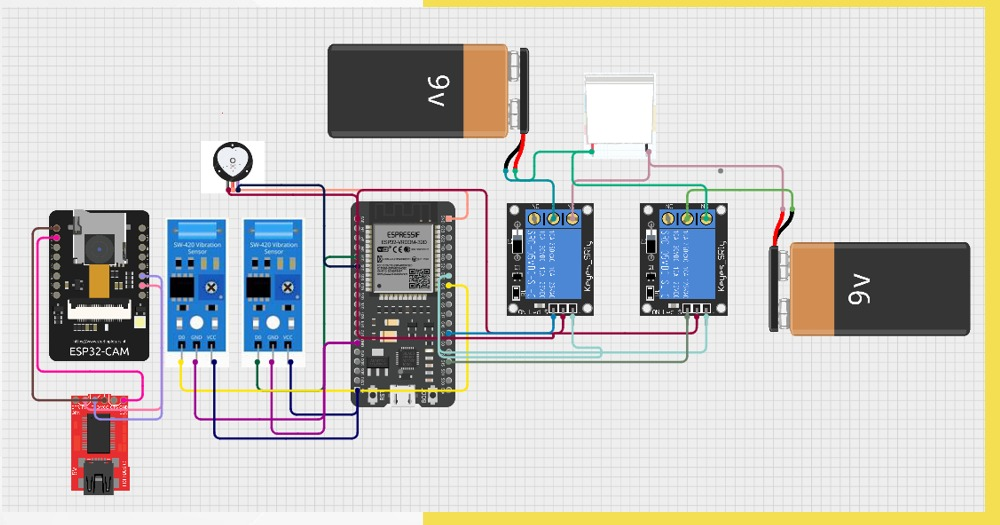

The IoT-Based Multipurpose Band revolutionizes modern healthcare by integrating advanced technology with traditional medical practices. This compact wearable device, powered by the ESP32 microcontroller, features sensors like the SW420 vibration sensor and heart pulse sensor to monitor health parameters in real time.
The band triggers alerts via a buzzer for abnormal readings, ensuring timely interventions. It also includes a Peltier module for precise temperature regulation, offering treatments such as cooling for muscle sprains and heat for swelling. With Wi-Fi or Bluetooth connectivity, the band allows remote monitoring by healthcare professionals.
Key Features:
This project represents a significant advancement in patient-centric healthcare delivery, making therapy portable, affordable, and accessible.
 ← Back to Portfolio